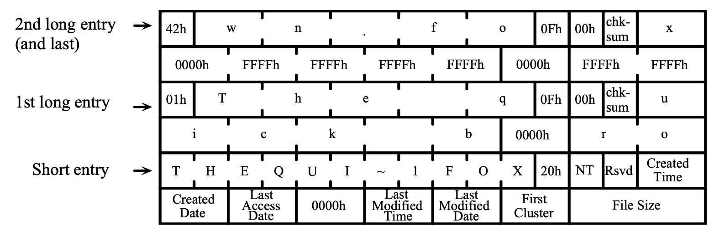
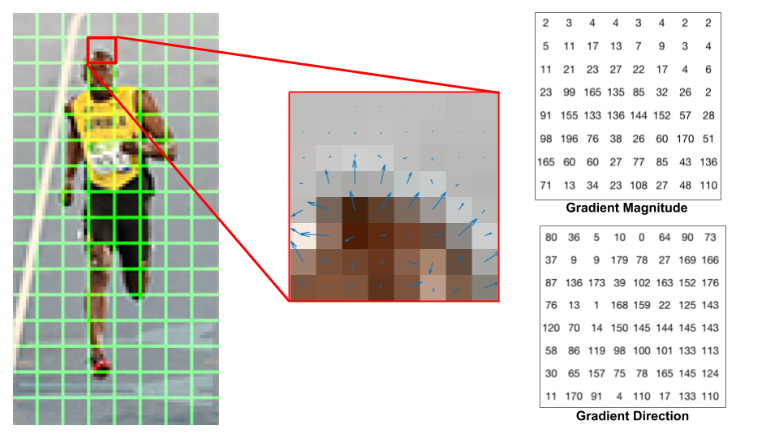

M5: File Recovery (frecov)
1. 背景
操作系统为我们提供了工具 “格式化” 存储介质——通常默认的选项是 “快速格式化”。课堂上也展示了 mkfs.fat (将文件系统格式化成 FAT 格式) 工具在格盘时的系统调用序列。
解释了 “为什么 1TB 的磁盘只要格式化一秒钟”：
- 把存储设备上的文件系统看成是一个数据结构 (例如，不妨假设成是大家熟悉的二叉树)，你不难理解你只要破坏数据结构的 “根节点”，也就是
数据结构的其他部分也就永久地丢失了——数据结构就完成了一次完美的 “内存泄漏”。当然，因为整个数据结构都被摧毁，你也可以重置内存分配器 (balloc/bfree) 的状态，这样所有磁盘上的空间就变得可以被分配，磁盘也就 “焕然一新” (被格式化) 了。
1.2 格式化磁盘的数据恢复
快速格式化紧接着就带来了一个问题：快速格式化 (指针赋值) 也意味着你能通过遍历存储设备 (内存) 的方式把数据结构找回来：
只要恢复出这两个指针，整个二叉树就又回来了！
不仅是格式化，我们知道文件系统在实现文件/目录的删除操作时，也只是从文件系统的数据结构中抹去文件相关的信息，并不会实际将每一个保存数据的块删除。
- 增加了文件系统的性能，减少了磁盘的读写数量，其实牺牲了一定程度的安全性——我们可以通过 “扫描磁盘” 的方式一定程度地恢复出文件系统中已经被删除的文件。
文件粉碎
文件粉碎的一个实现方法是用覆盖写的方式把文件的数据清除 (即找到磁盘上所有存储了该文件数据的块，并且向块内写入随机数据)，然后再删除。
- 对于 HDD 上的文件系统，通常这样的 “文件粉碎” 就是相当安全的。
- 底层的文件系统 (甚至是 Flash SSD 的 FTL) 可能采用 copy-on-write 方式保存数据，从而在硬件上保留文件的拷贝。
- 虽然恢复它们需要很大的代价，但安全的 “文件粉碎” 变得更加困难。使用加密的文件系统是更好的办法。
2. 实验描述
在这个实验中，我们要求你编写程序，best-effort 恢复经过了快速格式化的文件系统中 bmp 格式的图片即可 (即尽可能地抢救文件即可)。
实现命令行工具 frecov，给定一个格式化过的 FAT32 文件系统镜像，假设其中绝大部分文件都是以 BMP 格式存储的。请你尽可能地从文件系统中恢复出完整的图片文件。命令行工具使用方法：
frecov FILE
其中 FILE 是一个 FAT-32 文件系统的镜像。每恢复一张图片文件 (完整的文件，包含 BMP 头和所有数据)，调用系统中的 sha1sum 命令获得它的校验和，在标准输出中逐行输出图片文件的校验和以及你恢复出的文件名。只有校验和与文件名都恢复正确且一致，才被认为正确恢复了一个文件。
2.1 图片恢复任务
这个实验并不是让大家真正编写一个优秀的 undelete 工具。如果做到的话，你就可以开公司挣大钱了！EasyRecovery 曾经一度挣到很多钱
实验的目的是为了让大家体验一下：
- 仔细阅读 FAT 文件系统的 specification。因为手册体量不大，精读手册基本在你的掌控范围。
- 写代码分析文件系统镜像，尤其体会 mmap 带来的便利；
- 写代码分析一个实际的二进制文件：我们选取的是分析 BMP 格式的图片文件；
- 想一个 (也许是非常简单) 的算法恢复出文件系统中的 BMP 文件。也许能 work 的算法比你想象更简单。
我们对这个问题做了相当的简化，首先，我们保证我们的文件系统镜像使用如下方法创建的 (主要使用 mkfs.fat 工具):
- 创建一个空文件 (例如在下面的例子中，文件系统镜像的大小是 64 MiB)，例如
fs.img
- 在这个空间文件上创建 FAT-32 文件系统
$ mkfs.fat -v -F 32 -S 512 -s 8 fs.img
mkfs.fat 4.1 (2017-01-24)
WARNING: Not enough clusters for a 32 bit FAT!
fs.img has 64 heads and 32 sectors per track,
hidden sectors 0x0000;
logical sector size is 512,
using 0xf8 media descriptor, with 131072 sectors;
drive number 0x80;
filesystem has 2 32-bit FATs and 8 sectors per cluster.
FAT size is 128 sectors, and provides 16348 clusters.
There are 32 reserved sectors.
Volume ID is 6f71a2db, no volume label.
注意我们使用的选项：-S 512 表示 sector 大小是 512, -s 8 表示每个 cluster 有 8 个 sectors。这个信息对大家正确编程非常重要——如果你想偷懒，可以假设我们总是用这种方式创建文件系统镜像 (即硬编码这个信息)，但我们更推荐你阅读手册，写出兼容 FAT 标准的 frecov。
如果你用 file 命令，可以查看到镜像已经被正确格式化：
$ file fs.img
fs.img: DOS/MBR boot sector, code offset 0x58+2, OEM-ID "mkfs.fat", sectors/cluster 8, Media descriptor 0xf8, sectors/track 32, heads 64, sectors 131072 (volumes > 32 MB), FAT (32 bit), sectors/FAT 128, serial number 0x166d2b7d, unlabeled
- 挂载新创建的文件系统，并创建根目录下的
DCIM目录
-
此时，文件系统已被挂载 (mount) 到
/mnt目录下，并且有一个 “DCIM” 目录。然后我们会在 DCIM 目录中进行很多次如下的文件操作。尽管图片文件分辨率、大小可能不同，但都保证是真实世界中有意义的图片 (而不是随机数生成器生成的随机数据)： -
向 DCIM 中复制图片文件 (文件名为大/小写字母和数字、减号、下划线，以 “.bmp” 或 “.BMP” 结尾)
- 删除 DCIM 中的图片文件
- ……
-
(反复操作之后，文件系统中可能存在一些碎片化的情况)
-
卸载 (unmount) 文件系统镜像后，我们会重新进行一次文件系统的快速格式化，通过使用同样的选项再次调用
mkfs.fat：
此时的 fs.img 就是你要恢复的文件系统镜像。此外，你可以假设所有的 BMP 文件，都是使用 Python PIL 库创建的 24-bit 位图：
2.2 输出格式
试图恢复出 DCIM 目录下尽可能多的图片文件。对于每个恢复出的文件，输出一行，第一个字符串是该文件的 SHA1 fingerprint (通过调用系统的 sha1sum 命令得到)，然后可以输出一个或多个空格，接下来输出图片的文件名，例如：
d60e7d3d2b47d19418af5b0ba52406b86ec6ef83 0M15CwG1yP32UPCp.bmp
1ab8c4f2e61903ae2a00d0820ea0111fac04d9d3 1yh0sw8n6.bmp
1681e23d7b8bb0b36c399c065514bc04badfde79 2Kbg82NaSqPga.bmp
...
你的输出中可能带有一些调试信息，我们会忽略它 (不要输出太多调试信息，否则会导致 output limit exceeded)，但请保证你的 SHA1 fingerprint 和输出的文件名独占一行。
3. 正确性标准
请严格按照 2.2 中规定的输出格式输出 (40 字节的 sha1sum, 之后是文件名)。
3.1 评测说明
我们会使用不超过 128 MiB 的镜像文件来测试你的文件，然后：
- 我们有 10s 的 Time Limit (128 MiB 的镜像有 30s 的 Time Limit)。如果你的程序速度较慢，你可以考虑在每恢复出一个图片后打印，并 flush stdout (超时的程序会被终止，但只要恢复的文件名/图片正确即判定为正确)，建议使用内存不要超过 1 GB；
- 超过 10% 的文件名被恢复正确，可以通过所有 easy test cases；
- 超过 50% 的文件名被恢复正确，可以通过一个 hard test case；
- 超过 75% 的文件名和 50% 的图片被恢复正确，可以通过所有 hard test cases。
不必把图片恢复任务想象得太困难——大文件在文件系统中是倾向于连续存储的，就像在下面参考镜像的 FAT 表中看到的那样。
此外，Online Judge 会把你的输出作为一个 utf-8 字符串进行读取。因此，如果你输出了非法的字符 (例如不经检查地输出恢复的文件名，但其实并不是合法的文件名)，将有可能导致解码失败，得到 Invalid Output。
我们为大家提供了一个参考文件系统镜像。实际测试的图像来自同一个数据集 (WikiArt)，但我们可能会挑选不同的图片、赋予文件其他的随机名称或改变图像的大小，但所有随机的参数都与我们给出的镜像相同 (例如随机的文件名长度的分布等)。镜像请点这里下载。
镜像下载完毕后可以直接在文件系统中挂载 (你可能需要 root 权限)，这个镜像文件就成为了文件系统的一部分：
$ mount /tmp/M5-frecov.img /mnt/
$ tree /mnt/
/mnt
└── DCIM
├── 0M15CwG1yP32UPCp.bmp
├── 1yh0sw8n6.bmp
├── 2Kbg82NaSqPga.bmp
...
你可以查看其中的图片文件，例如 3DhTVVP9avTrH.bmp 是下面的图片：
如果你用二进制工具 (例如我们使用的是 xxd) 查看镜像文件，你能发现正确的 FAT 表，以链表的形式保存了每个图像文件的下一个数据块 (在 FAT 系统中，是 cluster 的编号)：
00004000: f8ff ff0f ffff ff0f f8ff ff0f 1720 0000 ............. ..
00004010: 0500 0000 0600 0000 0700 0000 0800 0000 ................
00004020: 0900 0000 0a00 0000 0b00 0000 0c00 0000 ................
00004030: 0d00 0000 0e00 0000 0f00 0000 1000 0000 ................
00004040: 1100 0000 1200 0000 1300 0000 1400 0000 ................
接下来，你可以模拟 Online Judge 在测试你的代码前所做的操作：使用 mkfs.fat 快速格式化这个磁盘镜像：
$ mkfs.fat -v -F 32 -S 512 -s 8 M5-frecov.img
mkfs.fat 4.1 (2017-01-24)
WARNING: Not enough clusters for a 32 bit FAT!
/tmp/M5-frecov.img has 64 heads and 32 sectors per track,
hidden sectors 0x0000;
logical sector size is 512,
using 0xf8 media descriptor, with 131072 sectors;
drive number 0x80;
filesystem has 2 32-bit FATs and 8 sectors per cluster.
FAT size is 128 sectors, and provides 16348 clusters.
There are 32 reserved sectors.
Volume ID is a332d0ad, no volume label.
如果你接下来再次挂载这个镜像，将会看到完全空白的目录，仿佛磁盘镜像上的所有文件都被删除了：
如果再次查看 M5-frecov.img 二进制文件，你会发现分区表已经被 “抹除” 了：
00004000: f8ff ff0f ffff ff0f f8ff ff0f 0000 0000 ................
00004010: 0000 0000 0000 0000 0000 0000 0000 0000 ................
00004020: 0000 0000 0000 0000 0000 0000 0000 0000 ................
00004030: 0000 0000 0000 0000 0000 0000 0000 0000 ................
00004040: 0000 0000 0000 0000 0000 0000 0000 0000 ................
虽然操作系统已经看不到磁盘上的文件了，但如果你仔细地搜索 (使用 “查找” 工具) 一下，还是可以发现一些蛛丝马迹：
00025ae0: 4250 0043 0070 002e 0062 000f 0089 6d00 BP.C.p...b....m.
00025af0: 7000 0000 ffff ffff ffff 0000 ffff ffff p...............
00025b00: 0130 004d 0031 0035 0043 000f 0089 7700 .0.M.1.5.C....w.
00025b10: 4700 3100 7900 5000 3300 0000 3200 5500 G.1.y.P.3...2.U.
00025b20: 304d 3135 4357 7e31 424d 5020 0064 2b5a 0M15CW~1BMP .d+Z
00025b30: ac50 ac50 0000 2b5a ac50 6915 3677 0700 .P.P..+Z.Pi.6w..
这好像以某种格式 (FAT32 的 directory entry) 存储了 “0M15CwG1yP32UPCp.bmp” 相关的信息。此外，bitmap 图片文件的文件头也被完整地在数据区里保留下来：
000fb000: 424d 2ecf 0f00 0000 0000 3600 0000 2800 BM........6...(.
000fb010: 0000 0202 0000 9f02 0000 0100 1800 0000 ................
000fb020: 0000 f8ce 0f00 c40e 0000 c40e 0000 0000 ................
000fb030: 0000 0000 0000 7d74 9986 7ba3 6c61 8888 ......}t..{.la..
000fb040: 7ea4 8076 9d84 7ca2 766d 9469 6187 6a64 ~..v..|.vm.ia.jd
你的 frecov 会被调用，运行在这个格式化后的镜像上，然后预期会得到一定的输出：
如果你挂载没有被格式化过的 M5-frecov.img，你可以查看所有图片的 sha1sum，从而检查你正确恢复了哪些图片。
$ cd /mnt/DCIM && sha1sum *.bmp
d60e7d3d2b47d19418af5b0ba52406b86ec6ef83 0M15CwG1yP32UPCp.bmp
1ab8c4f2e61903ae2a00d0820ea0111fac04d9d3 1yh0sw8n6.bmp
1681e23d7b8bb0b36c399c065514bc04badfde79 2Kbg82NaSqPga.bmp
aabd1ef8a2371dd64fb64fc7f10a0a31047d1023 2pxHTrpI.bmp
...
4. 实验指南
4.1 FAT32 文件系统
我们提供了一份 Microsoft FAT Specification 的 local copy。你可以试一试：不借助任何其他有关 FAT 的 blog post, tutorial 和代码，你会渐渐觉得 RTFM 不那么困难了。如果你依然感到困难，可以回看视频并参考课堂上的实例代码 fatree.c，但我们强烈建议大家不要复制其中的代码而是自己编写，以得到最好的训练。
FAT 文件系统是由一些头部信息 (元数据)、FAT (文件分配表) 和数据 (cluster, 微软的官方翻译是 “簇”) 组成的。如果你做一些分析，你会知道：
- FAT 文件的头部是可用的——我们用同样的方式进行两次格式化；
- FAT 表将被清空，此部分的数据相当于全部丢失；
- 数据区几乎没有变化——我们执行的是 “快速” 格式化。
接下来，你就可以开始照抄手册，进行 FAT 文件系统的解析了，例如手册已经详细地规定好了 FAT32 文件系统前 512 个字节的格式，你不妨把它解释成一个结构体：
struct fat32hdr {
u8 BS_jmpBoot[3];
u8 BS_OEMName[8];
u16 BPB_BytsPerSec;
u8 BPB_SecPerClus;
...
u8 __padding_1[420];
u16 Signature_word;
} __attribute__((packed));
“抄手册” 很容易抄错？不要忘记 _static_assert(sizeof(struct fat32hdr) == 512)。然后你会神奇地发现，如果你使用 mmap 系统调用将磁盘映射到地址空间中，例如返回 disk，那么你就可以直接访问磁盘镜像头部的元数据了：
panic_on(sizeof(struct fat_header) != 512, "bad header");
panic_on(disk->signature != 0xaa55, "not a valid fat");
cluster_sz = disk->BPB_BytsPerSec * disk->BPB_SecPerClus;
这个时候，你就可以真正在内存里任意 “把玩” 这个数据结构了。做一些实验，看看能不能在文件系统中找到一些有用的数据。记得我们在课堂上解释过，文件系统是基于 block I/O 封装的数据结构。当我们完成 mmap 以后，它就真的是一个内存里的数据结构了，除了有些 “指针” 需要经过额外的计算才能得到它指向的地址。
4.2 BMP 文件格式
为了完成实验，你还需要了解 BMP 文件的格式。为了锻炼大家独立思考、查找资料的能力，关于 BMP 文件的细节请 STFW。好消息是这部分你们需要查阅的资料很简单，由于我们的 BMP 都是以同样的方式创建的，你可以忽略其中大部分的 fields，只需关注：
- bitmap 存储区域开始的 offset；
- 图片的宽度和高度。
4.3 扫描 Clusters
在你对 FAT32 文件系统有了足够的认识以后，你会发现在我们的问题中，数据区的 clusters 分成以下几种情况：
- 目录文件，存储若干目录项 (directory entry)，对应手册 Sections 6 和 7 描述的内容。注意 Section 7 是非常重要的，因为你必须恢复出完整的文件名；
- BMP 文件的头部，以 “
424d(BM)” 开头； - BMP 文件的实际数据，按照 3 字节一组按顺序存储了图片中的所有像素；
- 未使用的 cluster。
在 FAT 表被清除后，我们已经无法根据 FAT 恢复出目录的树状结构了。因此接下来我们要做的是一个分类问题：我们需要依次扫描磁盘中的所有 clusters，并将它们标记为以上 4 类。你不需要使用任何机器学习——你可以手工硬编码一些特征，就足够完成识别了，例如目录文件里总是包含大量的 “BMP” 字符，这是数据和 bitmap 文件头所没有的。你不需要做得 100% 准确，因为你只要恢复相当一部分文件即可；但你要小心地编写健壮的代码，使得分类错误发生时程序不会发生太大的问题——你的程序可能在分类错误时 (例如将位图数据解析为目录时) 因为非法的输入而 crash。
4.4 图片数据恢复
接下来，你需要的是恢复目录文件中的目录项，从而得到文件名。手册上对目录文件中的目录项给出了精确的定义。当你需要写代码解析文件时，手册就比 blog posts 靠谱得多了。在这里，你要小心目录项可能跨过 cluster 的情况——当然简单起见，你可以放弃这个文件的恢复，只要你的程序不会因此 crash 就行。

当你恢复出一个目录项以后，你不仅得到了正确的文件名，而且得到了一个非常有用的信息：这个文件名对应的 cluster ID，你根据这个块的编号就可以找到一个保证是 BMP header 的 cluster——你可以和你在扫描 clusters 时的分类结果进行匹配，如果这个 cluster 不是一个 bitmap header，你可能需要放弃这个文件的恢复。
接下来剩下的工作就是恢复图片的剩下部分了！最简单地，你可以假设图片剩下的部分 (clusters) 都连续地存储在文件中。因此你只要正确知道文件的大小 (这个信息在目录项中也有)，你就可以直接恢复出一张图片了。
如果想要更进一步，就需要做出一些数学上的分析。我们丢失的是 FAT 表，也就是所有的 “链接” 关系。例如，我们可以把文件恢复建模成一个图问题：
- 建立有向图 G*，其中每一个 cluster 是一个顶点。
- 对于两个顶点 u, v，建立一条边 u→v，权值是 u、v 作为同一个文件连续两块的概率。
- 图中每一条 “概率足够大” 的路径就对应了一个文件。
在这个模型下，你可以提出很多有趣的算法来尝试恢复文件——注意你可以对同一个文件恢复出多种可能性。同时，你也可以采取一些启发式的优化，例如假设文件的大部分都是连续存储的。在构建图的过程中，我们也可以针对 bitmap 连续存储像素的特性去判断两个 cluster 是否处于同一张图片：现实世界中的图片大多是 “连续” 变化的，即绝大部分相邻的像素，像素值都不会发生剧烈的变化。这样的想法其实对应了对图像在二维空间上进行求导 (“gradient”)，而大部分像素的导数都是很小的：

这构成了 SIFT 算法的核心，并且在计算机视觉领域统领了数十年，直到深度学习技术的出现——卷积能够自动地学习出图片梯度的信息，并在此基础上提取出更为有用的高层特征。
4.5 计算校验和
终于，你得到了文件名、文件的大小和文件的所有数据——是时候把它的校验和输出了。在这个实验中，你需要调用外部工具 sha1sum 计算校验和。sha1sum 的命令行工具可以从 stdin (或者文件) 读取数据，然后把 hash digest 输出到标准输出：
sha1sum 是一种计算字节序列 “指纹” 的算法。指纹 (fingerprint) 也称为校验和 (checksum)，它是一个单向的 hash function H，能把一个很大空间里的字符串映射到很小的空间中 (计算 H(x))，并且目前而言，给定一个 fingerprint 后的字符串 t，人类很难计算出一个字符串 x 满足 H(x)=t。指纹能在不传输整个文件的前提下，快速比较两个文件是否相等。除了校验文件的完整性之外，指纹还可以用来做数据的去重——例如大家在即时通信软件中传送文件 (例如 QQ) 时，服务器会用校验和检查是否已经存在文件的副本，如果是就可以立即结束传输 (所以你们在上传一些别人可能已经上传过文件时会出现大文件 “秒传” 的情况)。
如果你不希望在这个实验里重复 pipe-fork-execve 的流程，popen 可以很好地解决这个问题：我们可以把恢复出的图像写入文件系统中的任何位置 (当然是某个临时目录)，然后用 popen 读取 sha1sum 的输出到缓冲区中，然后再将它输出：
fp = popen("sha1sum /tmp/your-tmp-filename", "r");
panic_on(fp < 0, "popen");
fscanf(fp, "%s", buf); // Get it!
pclose(fp);
4.6 调试你的程序
这次的程序稍微有些长。你可能需要一些 logging 才能比较好地帮助你完成任务。记录日志时要小心干扰 Online Judge。注意你依然只能编写一个 .c 文件，因此注意你的代码风格，适当地使用 IDE 和代码折叠能最大程度地提高你的编码效率。
除此之外，这个实验中一个常见的问题是你很多时候不知道你的程序 “为什么” 没有恢复出正确的图片——虽然你知道每一个图片的 sha1sum，但这些数值看起来就像是随机的数字，只要你有一个字节的差异，它们就会看起来完全不同。
一个调试的好办法是 “visualization”: 在调试时将恢复出的图片输出到某个目录中 (小心不要把图片文件放到 Git repo 中)，然后直接 “肉眼” 观察恢复的结果，你会发现有些图片得到了正确的恢复，有些则没有。你能解释为什么会看到下面那样错误的图形吗？